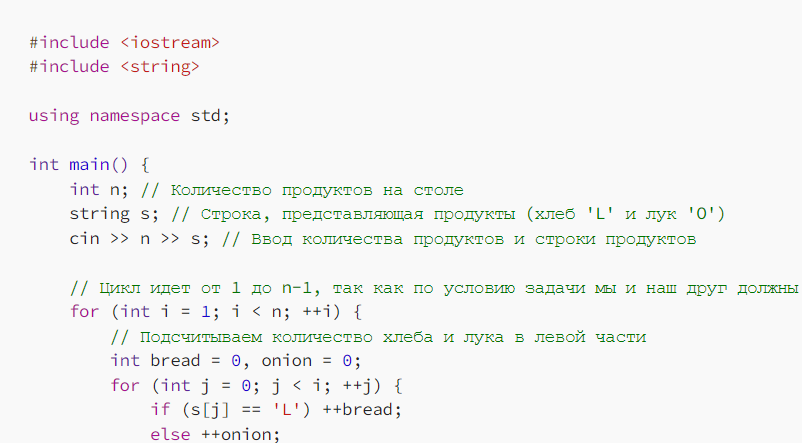

LOL LOVERS
Объясню сразу что LOL это Loaf Onion Loaf,
то есть хлеб лук хлеб, но в объяснении и решении
кода буду использовать английскую аббревиатуру LOL.
В условии странные люди которые любят только хлеб
и лук, они накрыли стол их этих продуктов, там
минимум 1 буханка и 1 лук. Объясню условия
как делить еду в языке кода:
